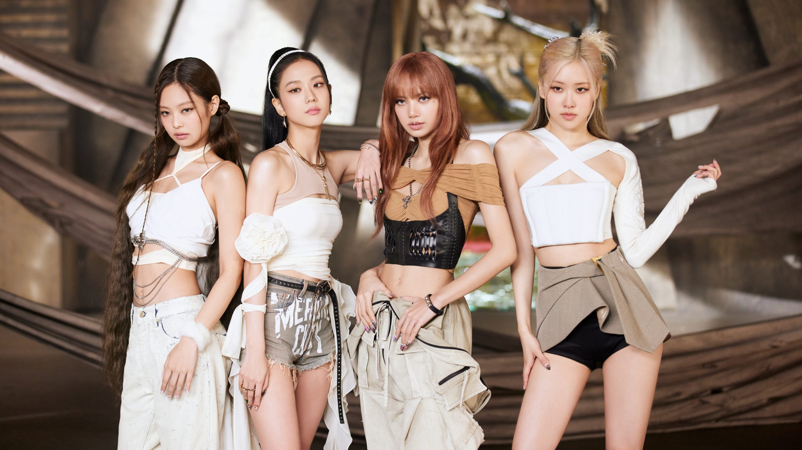

2022. 09. 16. 2nd Album [BORN PINK]
2022. 08. 19. Pre-Release Single 'Pink Venom'
2020. 10. 02. 1st Album [THE ALBUM]
2020. 08. 28. [Ice Cream (with Selena Gomez)]
2020. 06. 26. Pre-Release Single [How You Like That]
2019. 04. 05. 2nd Mini Album [KILL THIS LOVE]
2018. 06. 15. 1st Mini Album [SQUARE UP]
2017. 06. 22. 1st Digital Single [As If It's Your Last]
2016. 11. 01. 2nd Single Album [SQUARE TWO]
2016. 08. 08. Debut Single Album [SQUARE ONE]
Participating Album
2020. 05. 29. Lady Gaga [Chromatica] ‘Sour Candy’
2018. 09. 04. Dua Lipa [Dua Lipa (Complete Edition)] ‘Kiss And Make Up’
Concert
2022.10-2023.06. BLACKPINK WORLD TOUR [BORN PINK]
2021. BLACKPINK LIVESTREAM CONCERT [THE SHOW]
2019-2020. BLACKPINK WORLD TOUR [IN YOUR AREA] JAPAN DOME TOUR
2018-2019. BLACKPINK WORLD TOUR [IN YOUR AREA]
2018. BLACKPINK ARENA TOUR
2017. Japan Budokan Debut Showcase
Music Broadcast
2022. 09. 04. SBS [Inkigayo] ‘Pink Venom’ 1st place
2022. 09. 01. M.net [M Countdown] ‘Pink Venom’ 1st place
2022. 08. 25. M.net [M Countdown] ‘Pink Venom’ 1st place
2022. 08. 24. MBC M [Show Champion] ‘Pink Venom’ 1st place
2020. 11. 21. MBC [Show! Music Core] ‘Lovesick Girls’ 1st place
2020. 10. 25. SBS [Inkigayo] ‘Lovesick Girls’ 1st Place (Triple Crown)
2020. 10. 18. SBS [Inkigayo] ‘Lovesick Girls’ 1st place (2 weeks in a row)
2020. 10. 16. KBS [Music Bank] ‘Lovesick Girls’ 1st place
2020. 10. 15. M.net [M Countdown] ‘Lovesick Girls’ 1st place
2020. 10. 14. MBC M [Show Champion] ‘Lovesick Girls’ 1st place
2020. 10. 11. SBS [Inkigayo] ‘Lovesick Girls’ 1st place
2020. 10. 04. SBS [Inkigayo] ‘Ice Cream (with Selena Gomez)’ 1st Place (Triple Crown)
2020. 09. 27. SBS [Inkigayo] ‘Ice Cream (with Selena Gomez)’ 1st place (2 weeks in a row)
2020. 09. 20. SBS [Inkigayo] ‘Ice Cream (with Selena Gomez)’ 1st place
2020. 07. 31. KBS [Music Bank] ‘How You Like That’ 1st place
2020. 07. 29. MBC M [Show Champion] ‘How You Like That’ 1st Place (Triple Crown)
2020. 07. 25. MBC [Show! Music Core] ‘How You Like That’ 1st Place (Triple Crown)
2020. 07. 19. SBS [Inkigayo] ‘How You Like That’ 1st Place (Triple Crown)
2020. 07. 18. MBC [Show! Music Core] ‘How You Like That’ 1st place
2020. 07. 16. M.net [M Countdown] ‘How You Like That’ 1st place
2020. 07. 15. MBC M [Show Champion] ‘How You Like That’ 1st place (2 weeks in a row)
2020. 07. 12. SBS [Inkigayo] ‘How You Like That’ 1st place (2 weeks in a row)
2020. 07. 11. MBC [Show! Music Core] ‘How You Like That’ 1st place
2020. 07. 10. KBS [Music Bank] ‘How You Like That’ 1st place
2020. 07. 09. M.net [M Countdown] ‘How You Like That’ 1st place
2020. 07. 08. MBC M [Show Champion] ‘How You Like That’ 1st place
2020. 07. 05. SBS [Inkigayo] ‘How You Like That’ 1st place
2019. 05. 26. SBS [Inkigayo] ‘Kill This Love’ 1st place
2019. 04. 21. SBS [Inkigayo] ‘Kill This Love’ 1st place
2018. 07. 14. MBC [Show! Music Core] ‘DDU-DU DDU-DU’ 1st place (4 weeks in a row)
2018. 07. 12. M.net [M Countdown] ‘DDU-DU DDU-DU’ 1st place
2018. 07. 08. SBS [Inkigayo] 'DDU-DU DDU-DU' 1st Place (Triple Crown)
2018. 07. 07. MBC [Show! Music Core] 'DDU-DU DDU-DU' 1st Place (Triple Crown)
2018. 07. 05. M.net [M Countdown] 'DDU-DU DDU-DU' 1st place (2 weeks in a row)
2018. 07. 01. SBS [Inkigayo] 'DDU-DU DDU-DU' 1st place (2 weeks in a row)
2018. 06. 30. MBC [Show! Music Core] 'DDU-DU DDU-DU' 1st place (2 weeks in a row)
2018. 06. 29. KBS [Music Bank] 'DDU-DU DDU-DU' 1st place
2018. 06. 28. M.net [M Countdown] 'DDU-DU DDU-DU' 1st place
2018. 06. 24. SBS [Inkigayo] 'DDU-DU DDU-DU' 1st place
2018. 06. 23. MBC [Show! Music Core] 'DDU-DU DDU-DU' 1st place
2017. 07. 16. SBS [Inkigayo] ‘As If It’s Your Last’ 1st Place (Triple Crown)
2017. 07. 09. SBS [Inkigayo] ‘As If It’s Your Last’ Winner (2 weeks in a row)
2017. 07. 02. SBS [Inkigayo] ‘As If It’s Your Last’ Winner
2016. 12. 04. SBS [Inkigayo] ‘Playing with Fire’ 1st place (2 weeks in a row)
2016. 11. 27. SBS [Inkigayo] ‘Playing with Fire’ Winner
2016. 09. 11. SBS [Inkigayo] ‘Whistle’ 1st place
2016. 09. 08. M.net [M Countdown] ‘Whistle’ 1st place
2016. 08. 21. SBS [Inkigayo] ‘Whistle’ 1st place
Broadcast Program
2020. 07. 04. [24/365 with BLACKPINK]
2018. 01. 06. [BLACKPINK HOUSE]
Awards
2022. 08. MTV Video Music Awards [Best Metaverse Performance]
2021. 08. MTV Millennial Awards Brazil [Global Hit]
2021. 01. The 35th Golden Disk Awards [Bon Sang, Digital Music Bonsang]
2021. 01. The 10th Gaon Chart Music Awards [Mubeat Global Choice Award, Social Hot Star of the Year Award, Singer of the Year - Digital Music Division June/October]
2020. 12. 2020 Melon Music Awards [Top 10, Female Dance Award]
2020. 12. 2020 MAMA [2020 Visionary, Best Dance Performance Female Group, Best Female Group, Worldwide Fan Choice Top 10]
2020. 09. iHeartRadio Music Awards [Favourite Music Video Choreography]
2020. 09. MTV Millennial Awards Brazil [Best International Feature]
2020. 08. MTV Video Music Awards [Song of Summer]
2020. 03. Spotify Awards [Most Listened K-pop Artist (Female)]
2019. 12. 2019 MAMA [Worldwide Fan Choice Award]
2019. 11. E! People's Choice Awards [The Group of 2019, The Concert Tour of 2019, The Music Video of 2019]
2019. 01. The 9th Gaon Chart Music Awards [Singer of the Year - Digital Music Category, June]
2019. 01. The 33rd Golden Disc Awards [Digital Music Bonsang, Cosmopolitan Artist Award]
2018. 12. 2018 MAMA [World Wide Fan Choice Top 10]
2018. 12. 2018 Melon Music Awards [Top 10, Female Dance Award]
2018. 10. MTV Video Music Awards Japan [Best Dance Video]
2018. 02. The 7th Gaon Chart Music Awards [World Rookie of the Year]
2018. 01. The 27th Seoul Music Awards [Bon Sang]
2018. 01. The 32nd Golden Disk Awards [Digital Music Bonsang]
2017. 10. Busan One Asia Festival [Style Icon Award]
2017. 02. The 6th Gaon Chart Music Awards [Rookie of the Year, Artist of the Year - Digital Music Division August/November]
2017. 01. The 26th Seoul Music Awards [Rookie Award]
2017. 01. The 31st Golden Disk Awards [Rookie of the Year]
2016. 12. 2016 MAMA [Best Music Video Award, Best of Next Female]
2016. 11. 2016 Melon Music Awards [Rookie Award]
2016. 11. The 1st Asia Artist Awards [Rookie Award]